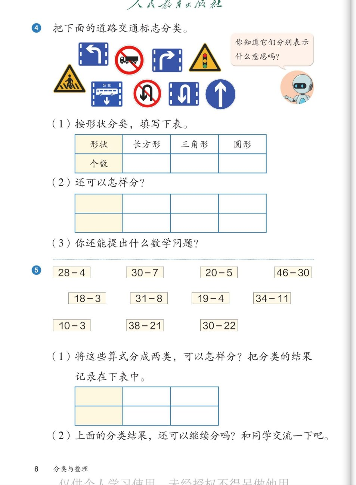

🚏 分类与整理 · 课本第 8 页 · 练一练 4～5
人教版《数学》二年级上册 · 有声图文带读 · 先想后看解析
题数
6
认知
2
强化
3
拓展
1
本页重点
自选标准分类
🎧 分两步学：
① 解析教材图片
——纯声音读图，读到哪一块哪一块闪动提示；关键处先倒计时让你思考，再在图片下方给出解析并朗读。
② 分层提问练习
——六道分层题（认知 / 强化 / 拓展），先思考再展开解析、朗读参考答案；这一步不再回到图片。
也可以随时点任意一句话、图上任意一块单独听；点课本文字卡还会展开答案。
教材图片（点块听读，读到哪块哪块闪）

📖 人教版《数学》二年级上册 · 课本第 8 页 · 图片仅供个人学习，版权归人民教育出版社所有
🤔 想一想（点我可跳过）
课本的文字（点句子：听读 + 看答案）
练一练④
④ 把下面的道路交通标志分类。
看答案 ▾
先数一数：
一共
9
个交通标志。
分类前先观察：形状有长方形、三角形、圆形；颜色有黄色、白色、蓝色；意思有警告、禁止、指示——从不同角度观察，就能找到不同的分类标准。
机器人的气泡
你知道它们分别表示什么意思吗？
看答案 ▾
按意思分三类：
①
警告标志
（黄色三角形，提醒小心）：注意行人、注意信号灯；
②
禁止标志
（红圈，不可以做）：禁止载货货车驶入、禁止掉头；
③
指示标志
（蓝色，告诉怎么走）：向左转弯、向右转弯、公交线路专用车道、掉头车道、直行。
练一练④(1)
(1) 按形状分类，填写下表。
看答案 ▾
参考答案：
个数一行填：长方形
4
（向左转弯、向右转弯、公交专用、掉头车道）、三角形
2
（注意行人、注意信号灯）、圆形
3
（禁止载货货车驶入、禁止掉头、直行）。
自查
：4 + 2 + 3 = 9，和标志总数对上。
练一练④(2)
(2) 还可以怎样分？
看答案 ▾
标准不唯一（表格是空白的，自己定标准自己填）：
① 按
颜色
分：黄色 2、白色 2、蓝色 5；
② 按
标志的意思
分：警告标志 2、禁止标志 2、指示标志 5。
记住：一种表格里，类别和个数要上下对应。
练一练④(3)
(3) 你还能提出什么数学问题？
看答案 ▾
参考问题：
三种形状的标志一共有多少个？4 + 2 + 3 = 9（个）。
💡 能用分类结果提出问题并正确解答，都算对。比如：蓝色标志比黄色标志多几个？5 − 2 = 3（个）。
练一练⑤(1)
(1) 将这些算式分成两类，可以怎样分？把分类的结果记录在下表中。
看答案 ▾
参考答案（按是否退位分）：
①
不退位
7 道：28−4、46−30、18−3、19−4、34−11、10−3、38−21（个位够减，不用借位）；
②
退位
4 道：30−7、20−5、31−8、30−22（个位不够减，要向十位借 1）。
自查
：7 + 4 = 11，和算式总数对上。
也可以按
减数是一位数还是两位数
分：7 道和 4 道。
练一练⑤(2)
(2) 上面的分类结果，还可以继续分吗？和同学交流一下吧。
看答案 ▾
答：可以！这就是逐层分类。
比如：不退位的 7 道，再按
减数是一位数还是两位数
分——4 道和 3 道；退位的 4 道，也可以再按
被减数是不是整十数
分——3 道（30−7、20−5、30−22）和 1 道（31−8）。
一层一层往下分，越分越清楚。
分层提问练习（先想后看解析）
🔵
认知
标志按形状分类，各类有几个？
看解析
🤔 想一想
解析：
长方形 4 个
：向左转弯、向右转弯、公交专用、掉头车道
三角形 2 个
：注意行人、注意信号灯
圆形 3 个
：禁止载货货车驶入、禁止掉头、直行
💡 自查：4 + 2 + 3 = 9，与标志总数对上
⚠️
认知
黄色三角形、红圈的标志各表示什么意思？
看解析
🤔 想一想
解析：
黄色三角形 = 警告标志
：提醒小心——注意行人、注意信号灯
红圈 = 禁止标志
：不可以做——禁止载货货车驶入、禁止掉头
蓝色 = 指示标志
：告诉怎么走——5 个
🎨
强化
标志除了按形状分，还可以按什么分？结果怎样？
看解析
🤔 想一想
解析（标准不唯一）：
按颜色：
黄色 2、白色 2、蓝色 5
按意思：
警告 2、禁止 2、指示 5
🌈 标准不同，结果不同；
总数都是 9，不变
➖
强化
11 道算式分成两类，按什么标准分？表格怎么填？
看解析
🤔 想一想
解析（按是否退位分）：
不退位 7 道
：28−4、46−30、18−3、19−4、34−11、10−3、38−21（个位够减）
退位 4 道
：30−7、20−5、31−8、30−22（个位不够减，借位）
💡 自查：7 + 4 = 11，与算式总数对上。也可按减数是一位数/两位数分：7 道和 4 道
🔍
强化
30−7 和 28−4 都是两位数减一位数，按「是否退位」分，它们在同一类吗？
看解析
🤔 想一想
解析：
30−7
：个位 0 减 7
不够减
，向十位借 1 →
退位
类
28−4
：个位 8 减 4
够减
，不用借 →
不退位
类
道理
：同一个标准下，特征不同就分到不同的类
🚀
拓展
算式的分类结果还可以继续分吗？举一个例子。
看解析
🤔 想一想
解析（开放题 · 逐层分类）：
例一：
不退位 7 道 → 再按减数是一位数 / 两位数分 → 4 道和 3 道。
例二：
退位 4 道 → 再按被减数是不是整十数分 → 3 道和 1 道。
🌈 每层只用一个标准，一层一层往下分，就是逐层分类
① 解析教材图片
② 分层提问练习
⏹ 停止
纯声音 + 高亮跟随 · 想好才出解析
← 返回导航